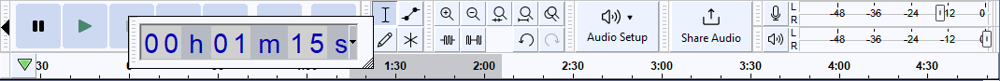
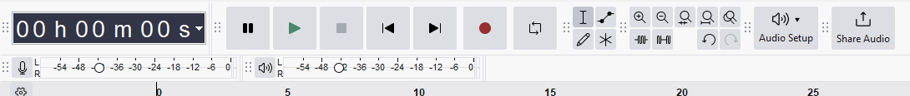
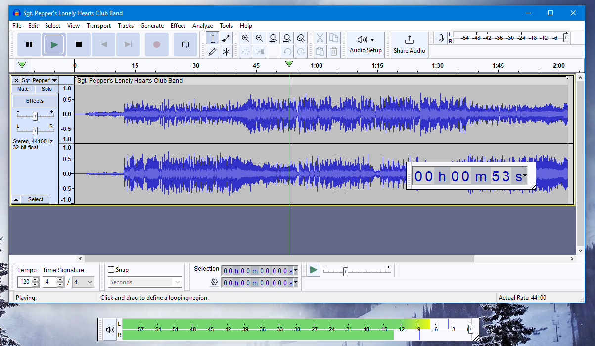

Customizing Toolbar Layout
- One reason to resize a toolbar is to lengthen it to get more precise results from a slider or audio level meter.
- If you do not use the device toolbar much, you may want to resize it down to its minimum size, or hide it completely.
| The command can be used to reset all toolbars to their default position and size. |
Repositioning and Resizing Toolbars
Toolbars can be re-positioned using the grabber and resized using the resizer.
| If you change your mind part way through a drag or a resize of a toolbar, you can use the Escape key Esc to abort the action. |
The Grabber
The grabber, the serrated edge at the left of most toolbars, allows repositioning of the toolbar.
Most toolbars have a grabber on their left hand edge. Click and drag on the grabber to move the toolbar. Any toolbar can be:
- Moved within a tooldock
- Docked in one of the Audacity tool docks
- Free floating above the Audacity window
Toolbars can be docked or floated by dragging on their grabber to move the toolbar, and then releasing.
The Resizer
The resizer, the two vertical lines at the right edge of some toolbars, allows resizing of the toolbar.
Some toolbars have a resizer at their right edge (the Meters, Device, Time and Play-at-Speed toolbars). Click and drag on the resizer to resize the toolbar.
- When undocked, the meter toolbars can be resized vertically as well as horizontally.
- A double height meter can be made by undocking, resizing, and then docking again.
Docking In the Docks
Toolbars can be docked in either of the two tooldock areas of the Audacity Project window, providing there is space available: either above the Timeline, or above the Status Bar at the bottom of the window (Selection Toolbar is in this location by default). Toolbars can also be dragged to move them to new position in the tooldock. The toolbar positions on exiting Audacity are always remembered when restarting Audacity next time.
When docking a toolbar into a tooldock area, a black triangle will appear, indicating an available docking position. The default toolbar docked positions can be restored at any time by clicking .
- Timer Toolbar being docked in the upper tooldock:
- 
- Timer Toolbar now docked in the upper tooldock, note that this causes the existing toolbars to be moved to accommodate this change:
- 
- The lower tooldock with the Timer Toolbar moved:

'Floating' outside the Dock
Toolbars may also be floated anywhere else in or outside the project window, including on a secondary monitor.
- The image below shows the Timer and Recording Meter toolbars floated effectively outside the Project window,
with the Playback Meter dragged wider and taller:
- 
Showing/Hiding Toolbars
You can select which toolbars to show using the command.
Resizable toolbars
Play-at-Speed Toolbar
The Play-at-Speed toolbar can also be resized horizontally to give greater accuracy for the slider setting. You can resize it by clicking and dragging the resizer at the toolbar's right edge.
Meter Toolbars
Both Meter toolbars can be resized. Resizing gives longer scales for the meters and hence a more accurate view of the volume levels.
- If a meter is docked, you can resize it horizontally by clicking and dragging the resizer at the toolbar's right edge.
- To undock a meter, click the Grabber on the left edge and drag. You can drag outside the Audacity project window, too.
- To resize when undocked, click on the triangular resize handle that appears at the bottom right of the toolbar and drag horizontally or vertically. The meters display in vertical orientation when their toolbar height exceeds their width.